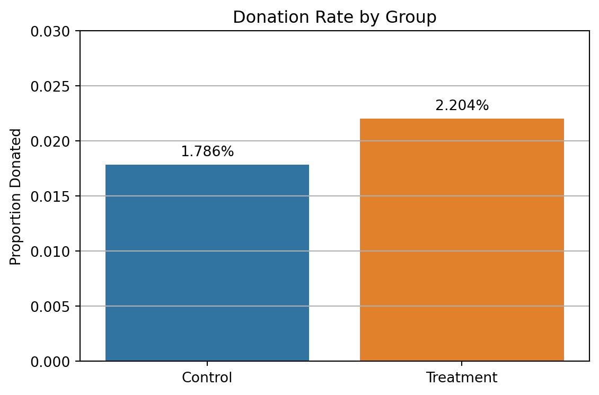
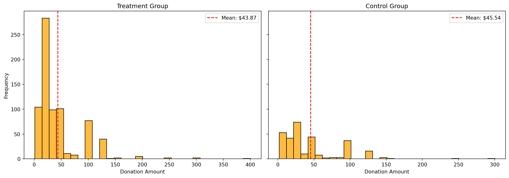
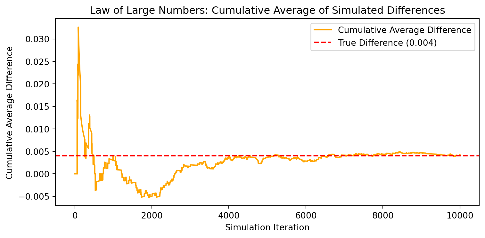

Dean Karlan at Yale and John List at the University of Chicago conducted a field experiment to test the effectiveness of different fundraising letters. They sent out 50,000 fundraising letters to potential donors, randomly assigning each letter to one of three treatments: a standard letter, a matching grant letter, or a challenge grant letter. They published the results of this experiment in the American Economic Review in 2007. The article and supporting data are available from the AEA website and from Innovations for Poverty Action as part of Harvard’s Dataverse.
This project seeks to replicate their results. The goal of the experiment was to test whether offering a matching donation—in which a lead donor promises to match contributions from other individuals—would increase the likelihood and/or size of charitable donations. In addition to testing whether matching grants were effective in general, Karlan and List also explored whether the size of the match mattered. Some participants were told that every dollar they donated would be matched 1:1, while others were offered more generous matches (2:1 or 3:1), allowing the researchers to test for differences in donor behavior across match sizes.
The experiment is notable for its scale, randomization, and use of real-world donor behavior, which together provide credible evidence of causal effects. Because the fundraising letters were identical in every respect except for the treatment condition, any differences in outcomes across groups can be attributed to the match offer itself. This approach allows for insights not only into how people respond to incentives, but also into broader questions about social influence, perceived impact, and behavioral nudges in charitable giving.
Data
Description
import pandas as pddata = pd.read_stata("karlan_list_2007.dta")data.head()
treatment
control
ratio
ratio2
ratio3
size
size25
size50
size100
sizeno
...
redcty
bluecty
pwhite
pblack
page18_39
ave_hh_sz
median_hhincome
powner
psch_atlstba
pop_propurban
0
0
1
Control
0
0
Control
0
0
0
0
...
0.0
1.0
0.446493
0.527769
0.317591
2.10
28517.0
0.499807
0.324528
1.0
1
0
1
Control
0
0
Control
0
0
0
0
...
1.0
0.0
NaN
NaN
NaN
NaN
NaN
NaN
NaN
NaN
2
1
0
1
0
0
$100,000
0
0
1
0
...
0.0
1.0
0.935706
0.011948
0.276128
2.48
51175.0
0.721941
0.192668
1.0
3
1
0
1
0
0
Unstated
0
0
0
1
...
1.0
0.0
0.888331
0.010760
0.279412
2.65
79269.0
0.920431
0.412142
1.0
4
1
0
1
0
0
$50,000
0
1
0
0
...
0.0
1.0
0.759014
0.127421
0.442389
1.85
40908.0
0.416072
0.439965
1.0
5 rows × 51 columns
data.describe()
treatment
control
ratio2
ratio3
size25
size50
size100
sizeno
askd1
askd2
...
redcty
bluecty
pwhite
pblack
page18_39
ave_hh_sz
median_hhincome
powner
psch_atlstba
pop_propurban
count
50083.000000
50083.000000
50083.000000
50083.000000
50083.000000
50083.000000
50083.000000
50083.000000
50083.000000
50083.000000
...
49978.000000
49978.000000
48217.000000
48047.000000
48217.000000
48221.000000
48209.000000
48214.000000
48215.000000
48217.000000
mean
0.666813
0.333187
0.222311
0.222211
0.166723
0.166623
0.166723
0.166743
0.222311
0.222291
...
0.510245
0.488715
0.819599
0.086710
0.321694
2.429012
54815.700533
0.669418
0.391661
0.871968
std
0.471357
0.471357
0.415803
0.415736
0.372732
0.372643
0.372732
0.372750
0.415803
0.415790
...
0.499900
0.499878
0.168560
0.135868
0.103039
0.378105
22027.316665
0.193405
0.186599
0.258633
min
0.000000
0.000000
0.000000
0.000000
0.000000
0.000000
0.000000
0.000000
0.000000
0.000000
...
0.000000
0.000000
0.009418
0.000000
0.000000
0.000000
5000.000000
0.000000
0.000000
0.000000
25%
0.000000
0.000000
0.000000
0.000000
0.000000
0.000000
0.000000
0.000000
0.000000
0.000000
...
0.000000
0.000000
0.755845
0.014729
0.258311
2.210000
39181.000000
0.560222
0.235647
0.884929
50%
1.000000
0.000000
0.000000
0.000000
0.000000
0.000000
0.000000
0.000000
0.000000
0.000000
...
1.000000
0.000000
0.872797
0.036554
0.305534
2.440000
50673.000000
0.712296
0.373744
1.000000
75%
1.000000
1.000000
0.000000
0.000000
0.000000
0.000000
0.000000
0.000000
0.000000
0.000000
...
1.000000
1.000000
0.938827
0.090882
0.369132
2.660000
66005.000000
0.816798
0.530036
1.000000
max
1.000000
1.000000
1.000000
1.000000
1.000000
1.000000
1.000000
1.000000
1.000000
1.000000
...
1.000000
1.000000
1.000000
0.989622
0.997544
5.270000
200001.000000
1.000000
1.000000
1.000000
8 rows × 48 columns
Variable Definitions
Variable
Description
treatment
Treatment
control
Control
ratio
Match ratio
ratio2
2:1 match ratio
ratio3
3:1 match ratio
size
Match threshold
size25
$25,000 match threshold
size50
$50,000 match threshold
size100
$100,000 match threshold
sizeno
Unstated match threshold
ask
Suggested donation amount
askd1
Suggested donation was highest previous contribution
askd2
Suggested donation was 1.25 x highest previous contribution
askd3
Suggested donation was 1.50 x highest previous contribution
ask1
Highest previous contribution (for suggestion)
ask2
1.25 x highest previous contribution (for suggestion)
ask3
1.50 x highest previous contribution (for suggestion)
amount
Dollars given
gave
Gave anything
amountchange
Change in amount given
hpa
Highest previous contribution
ltmedmra
Small prior donor: last gift was less than median $35
freq
Number of prior donations
years
Number of years since initial donation
year5
At least 5 years since initial donation
mrm2
Number of months since last donation
dormant
Already donated in 2005
female
Female
couple
Couple
state50one
State tag: 1 for one observation of each of 50 states; 0 otherwise
nonlit
Nonlitigation
cases
Court cases from state in 2004-5 in which organization was involved
statecnt
Percent of sample from state
stateresponse
Proportion of sample from the state who gave
stateresponset
Proportion of treated sample from the state who gave
stateresponsec
Proportion of control sample from the state who gave
stateresponsetminc
stateresponset - stateresponsec
perbush
State vote share for Bush
close25
State vote share for Bush between 47.5% and 52.5%
red0
Red state
blue0
Blue state
redcty
Red county
bluecty
Blue county
pwhite
Proportion white within zip code
pblack
Proportion black within zip code
page18_39
Proportion age 18-39 within zip code
ave_hh_sz
Average household size within zip code
median_hhincome
Median household income within zip code
powner
Proportion house owner within zip code
psch_atlstba
Proportion who finished college within zip code
pop_propurban
Proportion of population urban within zip code
Balance Test
As an ad hoc test of the randomization mechanism, I compare aspects of the treatment and control groups to assess whether they are statistically significantly different from one another at the 95% confidence level. If randomization was properly executed, we should expect no statistically significant differences in pre-treatment characteristics between the groups.
I begin by testing the variable mrm2, which captures the number of months since the last donation. This variable is useful for checking balance because it is unrelated to the treatment assignment and reflects donor history.
import pandas as pdimport statsmodels.formula.api as smffrom scipy import statsdata = pd.read_stata("karlan_list_2007.dta")vars_to_test = ["mrm2", "amount", "years", "freq"]results = []for var in vars_to_test: subset = data[["treatment", var]].dropna() control = subset[subset["treatment"] ==0][var] treatment = subset[subset["treatment"] ==1][var]# T-test t_stat, p_val = stats.ttest_ind(treatment, control, equal_var=False)# Linear regression regression = smf.ols(f"{var} ~ treatment", data=subset).fit() coef = regression.params["treatment"] reg_p = regression.pvalues["treatment"]# Difference in means diff = treatment.mean() - control.mean() results.append({"Variable": var,"Diff (Treat - Control)": round(diff, 5),"T-test p-value": round(p_val, 5),"Regression Coef": round(coef, 5),"Regression p-value": round(reg_p, 5) })pd.DataFrame(results)
Variable
Diff (Treat - Control)
T-test p-value
Regression Coef
Regression p-value
0
mrm2
0.01369
0.90485
0.01369
0.90489
1
amount
0.15361
0.05509
0.15361
0.06282
2
years
-0.05755
0.27532
-0.05755
0.27002
3
freq
-0.01198
0.91174
-0.01198
0.91170
The table of results above shows no statistically significant differences at the 5% level for any variable (p-values > 0.05), though amount is marginally close (p ≈ 0.06 in the regression). This is consistent with proper random assignment.
These checks are similar to what Karlan and List report in Table 1 of the original paper, which reassures readers that the treatment effect estimates later in the paper can be interpreted as causal. If pre-treatment covariates are balanced, then observed differences in outcomes are more likely attributable to the randomized treatment itself.
These results mirror those presented in Table 1 of Karlan and List (2007), which shows no significant differences between the groups in prior donation behavior and demographic characteristics. Table 1 serves to reassure the reader that any observed treatment effects later in the analysis can be confidently attributed to the randomized intervention rather than pre-existing differences between groups.
Experimental Results
Charitable Contribution Made
First, I analyze whether matched donations lead to an increased response rate of making a donation.
Donation Rate by Group
import pandas as pdimport seaborn as snsimport matplotlib.pyplot as plt# Calculate donation ratesdonation_rates = data.groupby("treatment")["gave"].mean().reset_index()donation_rates["group"] = donation_rates["treatment"].map({0: "Control", 1: "Treatment"})# Create barplotplt.figure(figsize=(6, 4))ax = sns.barplot(data=donation_rates, x="group", y="gave")plt.ylabel("Proportion Donated")plt.xlabel("")plt.title("Donation Rate by Group")plt.ylim(0, 0.03)plt.grid(axis='y')# Add percentage labels on topfor i, val inenumerate(donation_rates["gave"]): ax.text(i, val +0.0005, f"{val:.3%}", ha='center', va='bottom')plt.tight_layout()plt.show()

This bar plot shows that the treatment group—who received matching grant letters—had a higher donation rate than the control group.
The difference in donation rates is statistically significant at the 1% level.
The treatment group is more likely to donate, increasing the probability of giving by about 0.42 percentage points.
This replicates the result from Table 2A Panel A in Karlan & List (2007), showing that a match offer significantly boosts participation.
OLS regression shows a statistically significant positive coefficient (≈ 0.0042) on the treatment variable. This confirms the t-test: assignment to the treatment group increased the likelihood of making a donation.
This suggests that even a small behavioral nudge like mentioning a matching donation makes people more likely to contribute to charity. People respond to the perception of increased impact.
Optimization terminated successfully.
Current function value: 0.100443
Iterations 7
Probit Coefficient
Standard Error
p-value
95% CI Lower
95% CI Upper
0
0.08678
0.02788
0.00185
0.03214
0.14143
The probit model replicates Table 3, Column 1 of Karlan and List (2007), with a significant positive treatment effect (coefficient ≈ 0.087, p ≈ 0.002). This again confirms that individuals are more likely to donate when offered a matching grant.
Together, these results demonstrate a consistent and statistically significant treatment effect, providing strong evidence that the framing of charitable solicitations matters for donor behavior.
The match incentive not only has a practical impact but also a statistically robust one, even under a probit framework.
Differences between Match Rates
Next, I assess the effectiveness of different sizes of matched donations on the response rate.
/var/folders/h7/9ry6pj514cb7qp5v6btr37ym0000gn/T/ipykernel_40228/2990980929.py:4: FutureWarning:
The default of observed=False is deprecated and will be changed to True in a future version of pandas. Pass observed=False to retain current behavior or observed=True to adopt the future default and silence this warning.
Comparison
p-value
Rate A
Rate B
Difference (A - B)
0
2:1 vs 1:1
0.33453
0.02263
0.02075
0.00188
1
3:1 vs 2:1
0.96003
0.02273
0.02263
0.00010
2
3:1 vs 1:1
0.31011
0.02273
0.02075
0.00198
Observed donation rates:
1:1 match — 2.07%
2:1 match — 2.26%
3:1 match — 2.27%
The increase from 1:1 to 2:1 and 3:1 appears small.
None of the pairwise comparisons are statistically significant. This supports the paper’s statement on page 8 that larger match ratios do not lead to meaningfully higher donation rates.
/var/folders/h7/9ry6pj514cb7qp5v6btr37ym0000gn/T/ipykernel_40228/759364550.py:4: SettingWithCopyWarning:
A value is trying to be set on a copy of a slice from a DataFrame.
Try using .loc[row_indexer,col_indexer] = value instead
See the caveats in the documentation: https://pandas.pydata.org/pandas-docs/stable/user_guide/indexing.html#returning-a-view-versus-a-copy
/var/folders/h7/9ry6pj514cb7qp5v6btr37ym0000gn/T/ipykernel_40228/759364550.py:5: SettingWithCopyWarning:
A value is trying to be set on a copy of a slice from a DataFrame.
Try using .loc[row_indexer,col_indexer] = value instead
See the caveats in the documentation: https://pandas.pydata.org/pandas-docs/stable/user_guide/indexing.html#returning-a-view-versus-a-copy
Term
Coefficient
Std. Error
p-value
95% CI Lower
95% CI Upper
0
Intercept
0.02075
0.00139
0.00000
0.01802
0.02348
1
ratio2
0.00188
0.00197
0.33828
-0.00197
0.00574
2
ratio3
0.00198
0.00197
0.31332
-0.00187
0.00584
Regression results:
The baseline (1:1 match) donation rate is about 2.07%.
The 2:1 match effect: +0.19 percentage points (not statistically significant).
The 3:1 match effect: +0.20 percentage points (also not statistically significant).
Neither the 2:1 nor 3:1 match ratio coefficients are statistically significant. The results suggest that changing the size of the match ratio does not significantly change donation likelihood relative to 1:1.
Difference in Response Rates (Data vs. Regression Coefficients)
# Mean differences and coefficient comparisonspd.DataFrame([ {"Comparison": "2:1 vs 1:1","Raw Mean Difference": round(gave_2.mean() - gave_1.mean(), 5),"Regression Coefficient": round(reg_model.params["ratio2"], 5) }, {"Comparison": "3:1 vs 2:1","Raw Mean Difference": round(gave_3.mean() - gave_2.mean(), 5),"Regression Coefficient Diff (3 - 2)": round(reg_model.params["ratio3"] - reg_model.params["ratio2"], 5) }, {"Comparison": "3:1 vs 1:1","Raw Mean Difference": round(gave_3.mean() - gave_1.mean(), 5),"Regression Coefficient": round(reg_model.params["ratio3"], 5) }])
Comparison
Raw Mean Difference
Regression Coefficient
Regression Coefficient Diff (3 - 2)
0
2:1 vs 1:1
0.00188
0.00188
NaN
1
3:1 vs 2:1
0.00010
NaN
0.0001
2
3:1 vs 1:1
0.00198
0.00198
NaN
The differences in donation rates between 1:1, 2:1, and 3:1 match offers are very small and not statistically significant. These findings replicate the comment on page 8 of Karlan and List (2007): “Larger match ratios relative to a smaller match ratio had no additional impact.”
This suggests that donors may respond to the presence of a match, but not necessarily to the size of the match. Psychologically, the idea of having one’s donation matched could serve as a signal of trust or endorsement—but the exact multiplier does not further influence behavior.
Size of Charitable Contribution
In this subsection, I analyze the effect of the size of matched donation on the size of the charitable contribution.
charts side by side and scale #### All Respondents: Does Treatment Affect Amount Donated?
Among all individuals (including non-donors), the treatment group donated about $0.15 more on average. This effect is marginally significant (p ≈ 0.063). It suggests that matching increases expected donations slightly, but much of that effect may be driven by more people giving (rather than giving more).
This suggests that those who received a matching letter donated slightly more on average. However, the result is only marginally significant (at the 10% level). This weak evidence may indicate that the offer of a match has a small impact on the total amount donated—though for most people, the presence of the match does not substantially alter donation size.
Conditional on Donation: Do Donors Give More if Matched?
# Subset to donors onlydonors = data[data["gave"] ==1]# Linear regression among donors onlyamount_reg_donors = smf.ols("amount ~ treatment", data=donors).fit()pd.DataFrame([{"Treatment Coefficient": round(amount_reg_donors.params["treatment"], 5),"Std. Error": round(amount_reg_donors.bse["treatment"], 5),"t-statistic": round(amount_reg_donors.tvalues["treatment"], 3),"p-value": round(amount_reg_donors.pvalues["treatment"], 5),"95% CI Lower": round(amount_reg_donors.conf_int().loc["treatment", 0], 5),"95% CI Upper": round(amount_reg_donors.conf_int().loc["treatment", 1], 5)}])
Treatment Coefficient
Std. Error
t-statistic
p-value
95% CI Lower
95% CI Upper
0
-1.66839
2.87238
-0.581
0.56148
-7.30477
3.96799
Coefficient on treatment ≈ -1.67
p-value = 0.561
Among those who did donate, receiving a match letter did not significantly change the amount given. In fact, the coefficient is slightly negative, though not significant. Thus, we conclude that while match offers may increase the number of donors, they do not cause donors to give more, conditional on giving.
This coefficient does not have a strong causal interpretation, because donation decisions and donation amounts are jointly determined and the sample is selected on gave == 1.
/Users/jnishyu/anaconda3/lib/python3.10/site-packages/seaborn/_oldcore.py:1119: FutureWarning:
use_inf_as_na option is deprecated and will be removed in a future version. Convert inf values to NaN before operating instead.
/Users/jnishyu/anaconda3/lib/python3.10/site-packages/seaborn/_oldcore.py:1119: FutureWarning:
use_inf_as_na option is deprecated and will be removed in a future version. Convert inf values to NaN before operating instead.

Two histograms show the distribution of donation amounts for the treatment group and control group, restricted to those who donated. The vertical red line marks the average for each group:
Treatment Mean: ~$43.87
Control Mean: ~$45.54
Both distributions are right-skewed, with most donors giving small amounts and a few contributing large sums. There is no visible shift in the average due to the treatment.
Conclusion
These analyses support the idea that matching offers increase response rate, but do not change how much people give once they’ve decided to donate. This distinction is important for fundraising strategies: matching may motivate more people to give, but it doesn’t necessarily increase per-donor revenue.
Simulation Experiment
As a reminder of how the t-statistic “works,” in this section I use simulation to demonstrate the Law of Large Numbers and the Central Limit Theorem.
Suppose the true distribution of respondents who do not get a charitable donation match is Bernoulli with probability p=0.018 that a donation is made.
Further suppose that the true distribution of respondents who do get a charitable donation match of any size is Bernoulli with probability p=0.022 that a donation is made.
Law of Large Numbers
import numpy as npimport matplotlib.pyplot as plt# Parametersp_control =0.018p_treatment =0.022n_sim =10000np.random.seed(42)# Simulate 10,000 binary outcomes for each groupcontrol_sim = np.random.binomial(1, p_control, 100000)treatment_sim = np.random.binomial(1, p_treatment, n_sim)# Vector of differencesdiffs = treatment_sim - control_sim[:10000]# Cumulative average of the differencescum_avg = np.cumsum(diffs) / np.arange(1, len(diffs) +1)# Plotplt.figure(figsize=(8, 4))plt.plot(cum_avg, label='Cumulative Average Difference', color='orange')plt.axhline(y=p_treatment - p_control, color='red', linestyle='--', label='True Difference (0.004)')plt.title("Law of Large Numbers: Cumulative Average of Simulated Differences")plt.xlabel("Simulation Iteration")plt.ylabel("Cumulative Average Difference")plt.legend()plt.tight_layout()plt.show()

This plot demonstrates the Law of Large Numbers. As we simulate more and more observations, the cumulative average of the differences converges toward the true mean difference (0.004). Initially, there’s randomness and fluctuation, but the line stabilizes as the number of observations increases.
This convergence is the foundation for using sample averages to estimate population parameters and underpins why large sample sizes give us more reliable estimates in experiments.
These four histograms illustrate how the sampling distribution of the difference in means behaves at increasing sample sizes:
At n = 50, the distribution is quite wide and skewed. Zero is within the center-ish but not tightly.
As sample size increases, the distribution becomes tighter, more symmetric, and centered.
By n = 1000, the distribution of average differences closely resembles a normal distribution centered near the true mean difference (0.004).
This is a direct illustration of the Central Limit Theorem:
As sample size increases, the distribution of the sample mean difference becomes approximately normal, regardless of the original distribution shape.
Also note: zero shifts from being more “middle-ish” in smaller samples to being closer to the tail as the signal (the true effect) dominates the noise.